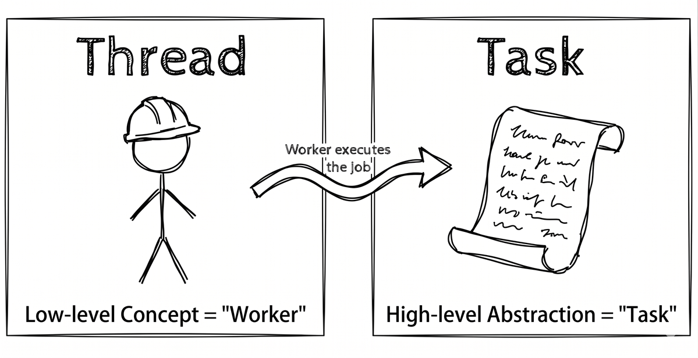
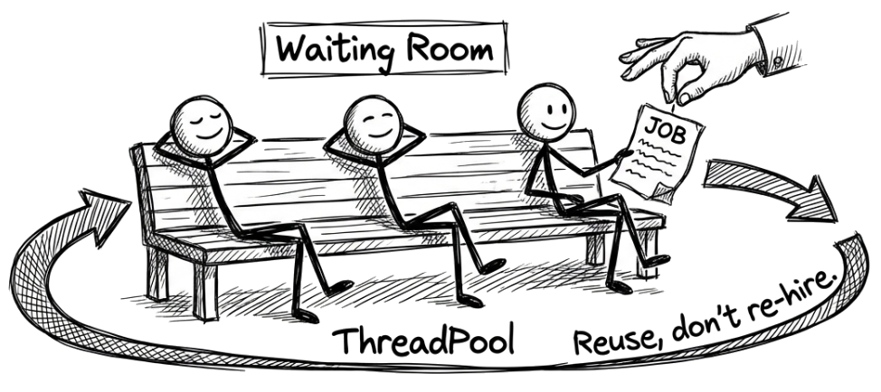
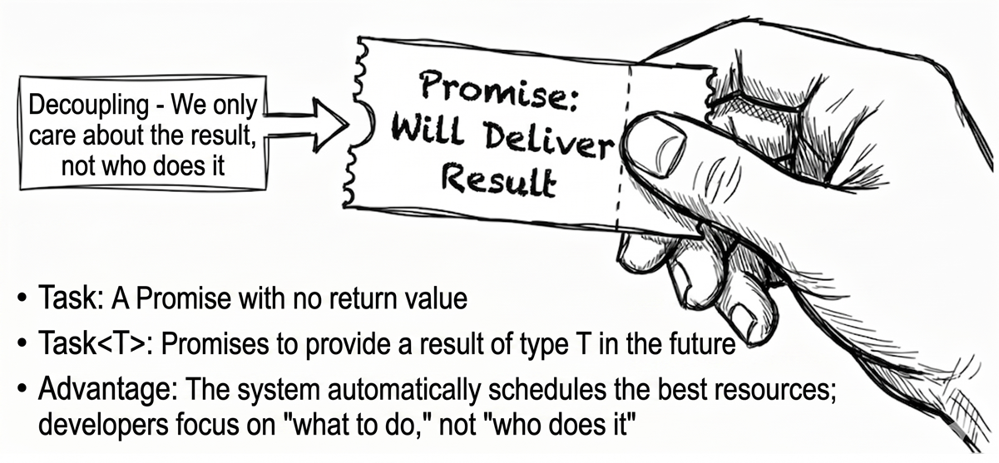
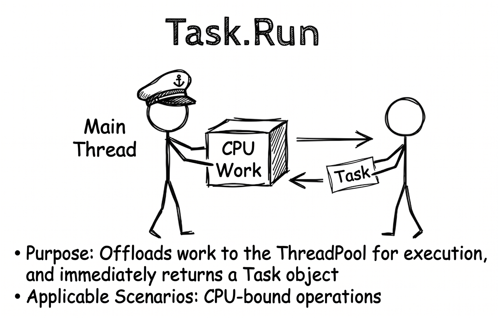
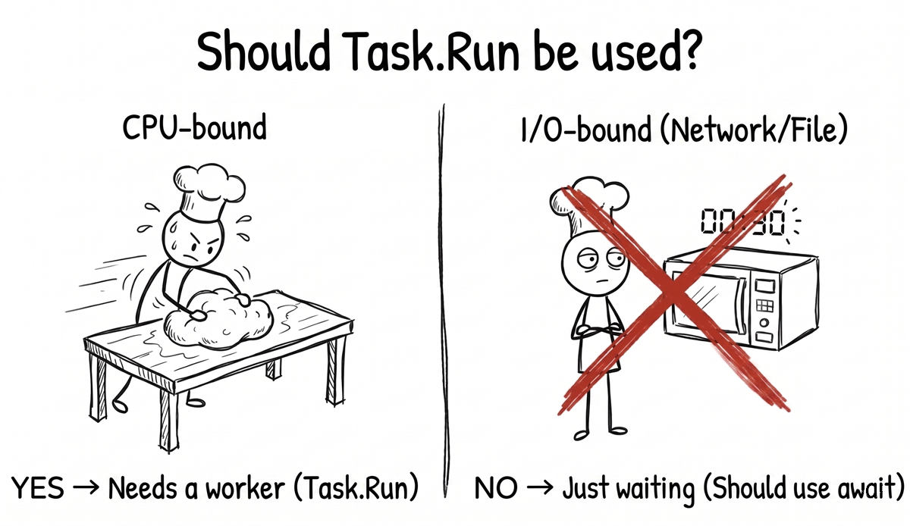
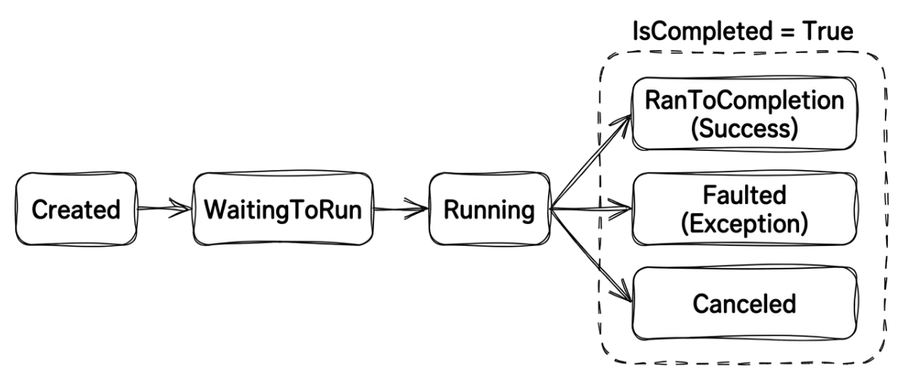
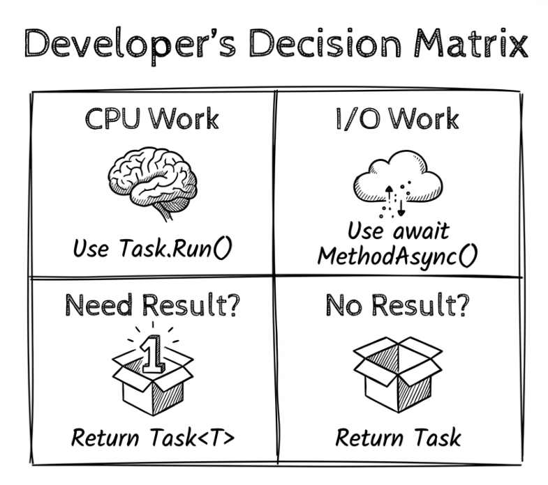

Chapter 2: Threads and tasks in .NET
In Chapter 1, we used the pizza-shop analogy to see why applications often need to handle multiple things at once. We also got our first glimpse of how multithreading and asynchronous programming can improve efficiency. At the same time, we saw the tradeoff: multithreading brings its own management complexity, including the cost of context switches and the difficulty of resource synchronization.
This chapter steps into the .NET world and shows how those ideas appear in real code. The goal is to help you understand the two core concepts behind asynchrony and multitasking in .NET: threads and tasks. Along the way, we will see how modern tools help us avoid the pitfalls of traditional thread management.
Many beginners confuse threads and tasks, but to write efficient, reliable asynchronous code, it helps to understand the distinction clearly. In simple terms:
- A thread is a lower-level concept. You can think of it as a “worker” that executes code.
- A task is a higher-level abstraction that represents a piece of “work” to be completed.

We will walk through the following key topics:
- The challenge of the traditional approach: a quick review of the complexity and limitations of managing threads directly.
- The core idea,
Task: understanding howTaskacts as a higher-level abstraction that solves the pain points of traditional thread management. - The modern starting point,
Task.Run: learning how to start background work easily withTask.Run. - The lifecycle and states of
Task: seeing how aTaskmoves through different states from creation to completion. - A task is not the same as a thread: clarifying the fundamental difference between CPU-bound and I/O-bound work.
- Foreground threads vs. background threads: understanding the key lifecycle difference between these two kinds of threads.
The challenge of the traditional approach: the complexity of managing threads directly
In early versions of .NET, developers had to work with threads much more directly. That approach offered a great deal of control, but it also introduced significant complexity and several potential problems. Looking at these challenges first makes it easier to appreciate how modern asynchronous programming simplifies the model.
Prerequisite: the main thread and worker threads
In the upcoming examples, you will see two terms repeatedly:
- The main thread: the initial thread assigned by the operating system when the application starts. If the main thread gets stuck and becomes blocked, the whole program may stop responding.
- Worker threads: a general term for any threads other than the main thread that are used to do work. They might be extra threads that we create manually, or threads borrowed from the
ThreadPool. Later in this chapter, we will define more precisely whether a given thread is technically a foreground or background thread in the .NET lifecycle.
Creating a thread directly: Thread.Start
First, consider the most traditional approach: manually creating a System.Threading.Thread object and then calling Start to begin its assigned work. Here is a simple example:
var msg = $"Main thread ID: {Environment.CurrentManagedThreadId}";
Console.WriteLine(msg);
// Create a new thread to execute DoWork
var newThread = new Thread(DoWork);
newThread.Start();
Console.WriteLine("Main thread continues running...");
void DoWork()
{
var msg = $"Worker thread ID: {Environment.CurrentManagedThreadId}";
Console.WriteLine(msg);
Console.WriteLine("Work is in progress...");
Thread.Sleep(2000); // Simulate 2 seconds of work
Console.WriteLine("Work is done.");
}Sample output:
Source code: DemoThreadStart
At first glance, the code might not look too complex. But once you use it in a real application, the problems quickly become obvious:
- It is expensive. Every time you create a new thread, the system must reserve a fairly large chunk of memory for that thread’s stack and spend additional resources on kernel-level setup. The actual stack size depends on the operating system and default configuration. On Windows, for example, the default reserved stack size is commonly about 1 MB. If you keep creating new threads for small jobs, it is like hiring a brand-new employee just to deliver a single takeout order. It is inefficient.
- It is hard to manage. You have to manage the thread’s lifecycle manually, and it is difficult to retrieve a return value or handle exceptions cleanly.
Note: The statement above about Windows commonly reserving about 1 MB for the default thread stack is based on Microsoft documentation: Thread Stack Size.
About
Thread.SleepMany examples in this book use
Thread.Sleep(). In the sample programs, its main purpose is to deliberately create an easy-to-observe delay or blocking effect, so you can see thread switching, waiting, and control flow more clearly.
Thread.Sleepitself is not part of asynchronous programming. In fact, it is exactly the kind of “blocking wait” that we want to avoid with asynchronous techniques. To be precise,Thread.Sleepblocks the thread, which means that thread cannot do any other work. It also does not represent real CPU-bound computation, because duringSleepthe thread is not actually calculating anything. It is simply idle. In real I/O operations, we want to avoid blocking the thread while waiting. In real CPU-bound scenarios, the work is usually complex computation, not a call toSleep.
Reusing threads: ThreadPool
To solve the performance problem caused by new Thread(), .NET introduced the thread pool. You can think of it as .NET hiring a pool of resident “workers” (Thread) for your application in advance. When a work item needs to run, the runtime assigns an idle worker from that pool. When the work is finished, the worker goes back to the pool and waits for the next assignment instead of being terminated. This greatly improves resource efficiency.

The basic logic in the following example is the same as in DemoThreadStart. The only difference is that this time we no longer create a thread manually. Instead, we let the thread pool assign an existing worker to handle the job:
var msg = $"Main thread ID: {Environment.CurrentManagedThreadId}";
Console.WriteLine(msg);
// Queue a work item to the thread pool
ThreadPool.QueueUserWorkItem(_ => DoWork());
Console.WriteLine("Main thread continues running...");
Thread.Sleep(3000); // Wait for the background work to finish,
// or the main program might exit first.
void DoWork()
{
var msg =
$"Background thread ID: " +
$"{Environment.CurrentManagedThreadId}";
Console.WriteLine(msg);
Console.WriteLine("Background work is in progress...");
Thread.Sleep(2000); // Simulate 2 seconds of work
Console.WriteLine("Background work is done.");
}Source code: DemoThreadPool
If ThreadPool can reuse threads, does that solve the problem? Not completely. ThreadPool improves performance dramatically, but it still has two major drawbacks:
- Fire-and-forget:
ThreadPool.QueueUserWorkItem(...), as shown here, is fire-and-forget, so it is hard to know when the work finishes or to retrieve a return value. - An exception black hole: if the background work fails, the main thread cannot directly catch an exception thrown on the background thread. This makes error handling cumbersome and potentially dangerous.
Note
Once you queue work to the
ThreadPoolwithThreadPool.QueueUserWorkItem(), the main thread continues executing. If the background work throws an exception while it is running, that exception surfaces as an unhandled exception on the background thread. The original caller—the main thread—cannot catch it with atry-catchblock. In modern .NET, this usually causes the entire process to crash.To handle that situation safely, the developer must place a
try-catchblock inside the work item and then find a separate way to communicate the error back to the main program. That usually involves more complicated state sharing and synchronization mechanisms.
The core idea: Task, a higher-level abstraction that solves the complexity of thread management
From this perspective, the direction of modern .NET is clear: we need an abstraction that sits at a higher level than direct thread management. In C#, System.Threading.Tasks.Task is that core abstraction for modern asynchronous programming. When you see a method return Task or Task<T>, it helps to think of it as a promise or a future:
Task: represents an asynchronous operation without a return value. It promises, “I will complete this work at some point in the future.”Task<T>: represents an asynchronous operation with a return value. It promises, “I will complete this work at some point in the future and give you a result of typeT.”
The most valuable part of this “promise” model is that it decouples “the work to be done” from “the worker that executes it.” Once you have the Task object, you can track its state, such as whether it has completed or failed, and obtain its result when it is done, without worrying about which thread is actually running it.

This abstraction brings a major benefit. The .NET runtime can schedule and execute Task objects more efficiently based on current system load, the number of CPU cores, and other factors. For example, it can reuse existing threads and avoid the cost of creating and destroying threads repeatedly. As a result, Task improves on the pain points of traditional Thread and ThreadPool usage, including lifecycle management, returning values, and exception handling. That lets developers focus on “what work needs to be done” rather than “which worker should do it, and how it should be supervised.”
The modern starting point: Task.Run
Think back to the pizza shop in Chapter 1. Our chef was mostly slowed down by “waiting for the oven,” which was an I/O-bound delay. But what if the chef receives a complicated handcrafted order and has to knead dough continuously for ten minutes? That kind of work, where the CPU must stay actively busy, is called CPU-bound work.
When we face CPU-bound work, we still do not want it to tie up the head chef; in code, that “head chef” might be the UI thread or the main thread. A natural solution is to hand the work off to another helper in the kitchen. That is the core mission of Task.Run: combining the efficiency of ThreadPool with the abstraction benefits of Task.
The role of Task.Run is simple: it hands a piece of work to the thread pool for execution and immediately returns a Task object that represents that work.

Let’s start with a basic example. The following code sends a time-consuming operation to a background thread with Task.Run and then uses the returned Task object to wait for it to finish:
var msg = $"Main thread ID: {Environment.CurrentManagedThreadId}";
Console.WriteLine(msg);
Console.WriteLine("Getting ready to use Task.Run for background work...");
// Hand the work to the thread pool and get the Task object
Task task = Task.Run(() =>
{
var msg =
$"Background thread ID: " +
$"{Environment.CurrentManagedThreadId}";
Console.WriteLine(msg);
Console.WriteLine("Background work is in progress...");
// Only to simulate a time-consuming synchronous operation.
Thread.Sleep(2000);
Console.WriteLine("Background work is done.");
});
Console.WriteLine(
"Main thread has called Task.Run " +
"and is free to do other things...");
// Wait for the Task to complete
task.Wait();
Console.WriteLine(
"Confirmed that the Task has completed. " +
"The main program is about to exit.");Sample output:
Here, task.Wait() is used only to ensure that the background work finishes before the Console application exits. In real asynchronous code, especially in UI or server-side applications, we should usually use await to wait for a Task asynchronously rather than calling Wait() and blocking the current thread. We will dig into that in the next chapter.
Source code: DemoTaskRun
If the background work needs to return a value, Task.Run can handle that too:
Console.WriteLine(
"Getting ready to use Task.Run " +
"for background work that returns a value...");
// Task<string> means this work will return a string in the future
Task<string> taskWithResult = Task.Run(() =>
{
Thread.Sleep(2000);
return "This is the computed result from the background work";
});
Console.WriteLine("Main thread continues running...");
// Accessing .Result blocks the current thread
// until the Task completes and returns the result.
string result = taskWithResult.Result;
Console.WriteLine($"Result from background work: {result}");However, one more point is important here. As mentioned earlier, calling .Wait() on a Task blocks the current thread. This example uses the .Result property to retrieve the result of asynchronous work, which also blocks the thread. When that happens, you lose the main benefit of asynchrony. Therefore, when writing asynchronous code, you should avoid calling .Wait() or reading .Result whenever possible.
A more natural approach is to use the await keyword directly:
// (Assume this is inside an async Main method)
Console.WriteLine(
"Getting ready to use async/await to wait " +
"for background work without blocking...");
// ✓ Correct approach: wait for the Task without blocking
string resultAsync = await Task.Run(() =>
{
Thread.Sleep(2000);
return "This is the result obtained with await";
});
Console.WriteLine($"Result from background work: {resultAsync}");As you can see, after switching to await, the code preserves the benefits of asynchronous programming while still feeling direct and intuitive, almost like synchronous code. We will dig into the “magic” behind that in the next chapter.
Note: In this example, the code handed to
Task.Runreally does occupy a background thread while it is executing.
Here is a useful point to remember: Task.Run is best suited for CPU-bound work. For example, complex computation is a good candidate to move off the UI or main thread and run on a background thread instead.
The rule of thumb for when to use Task.Run is simple. If an async method does purely computational work, such as encryption or format conversion, and that work would freeze the UI, you should offload it to a background thread with Task.Run. However, if the work is merely waiting for I/O, such as downloading a file or querying a database, async/await already prevents blocking, so Task.Run is unnecessary. The key question is whether the work is fundamentally CPU-bound or I/O-bound.

How do you enable
awaitin a Console app?To use the
awaitkeyword at the program entry point, which is theMainmethod, you need to make sure the project is set up correctly.
- The default Console project template in modern .NET: when you create a new Console application, it uses top-level statements. You do not need to define
Main, and you can useawaitdirectly at the top ofProgram.cs. (.NET 6+)- Older versions of C#: you must change the signature of
Mainmanually topublic static async Task Main(string[] args). (Note:async Mainis supported starting from C# 7.1)
Do not use Task.Run to call asynchronous I/O methods
The core job of Task.Run is to offload synchronous, CPU-bound work to a background thread so the caller stays responsive. However, many people take an I/O method that is already asynchronous and wrap it in Task.Run anyway.
✘ Anti-pattern:
var json = await Task.Run(
async () => await httpClient.GetStringAsync(url));✔ Correct approach:
var json = await httpClient.GetStringAsync(url);httpClient.GetStringAsync is already asynchronous. When you await it, the current thread is already free to do other work while the network I/O is in progress. Wrapping it in Task.Run adds no benefit. Instead, it only adds unnecessary overhead: an extra thread-pool scheduling step and an extra delegate wrapper.
The lifecycle and states of Task
Once we obtain a Task object through Task.Run or some other mechanism, we can inspect its Status property, which uses the TaskStatus enum, to see where the operation is in its lifecycle. A typical Task goes through the following important states:
Created: the task has been created but has not yet been scheduled to run.WaitingForActivation: the task is waiting to be activated. This is very common for asynchronous operations that depend on infrastructure to signal completion, such asTask.Delayor I/O work.WaitingToRun: the task has been scheduled and is waiting for the thread pool to provide a thread.Running: the task is currently executing.RanToCompletion: the task finished successfully.Faulted: the task failed because of an unhandled exception.Canceled: the task was canceled.
Besides Status, Task also provides several convenient Boolean properties: IsCompleted, IsFaulted, and IsCanceled. Note that IsCompleted will be true if the task is in any of the last three states listed above: RanToCompletion, Faulted, or Canceled.

These state names might seem abstract, so let’s observe the changes through a short example:
Console.WriteLine(
"Creating and starting a task " +
"that will intentionally fail...");
Task myTask = Task.Run(() =>
{
Console.WriteLine(
"Task started and is about " +
"to throw an exception...");
Thread.Sleep(500);
throw new InvalidOperationException("Oops, the task failed!");
});
try
{
// Intentionally wait for the task to complete
// so we can observe its final state.
myTask.Wait();
}
catch (AggregateException)
{
// When Wait() is used on a failed Task,
// the exception is wrapped in an AggregateException.
// We catch and ignore it here
// so we can observe the task's final state.
}
Console.WriteLine($"Final task status: {myTask.Status}");
Console.WriteLine($"IsFaulted: {myTask.IsFaulted}");
Console.WriteLine($"IsCompleted: {myTask.IsCompleted}");Sample output:
This code also demonstrates the exception-handling behavior mentioned earlier. When you use a traditional blocking approach such as .Wait() or .Result to wait on a Task that fails, the original exception gets wrapped inside an AggregateException. We will examine that mechanism, and how modern await “unwraps” the exception for you, in Chapter 4.
Source code: DemoTaskStatus
A task is not the same as a thread: from CPU-bound to I/O-bound work
A common question is: “Does every Task mean that a background thread is running behind the scenes?”
The answer is “no.”
Task is a very abstract concept. It represents only a “promise for the future.” That promise can be fulfilled by a background thread doing synchronous CPU work, such as when you use Task.Run. However, it can also represent work that does not occupy a dedicated thread while it is waiting.
To clear up that misconception, let’s look at two common examples: Task.Delay and Task.FromResult. Both create Task objects, but neither requires an extra thread to sit around waiting.
Task.Delay: waiting without blocking a thread
Do you remember Thread.Sleep? It makes the current thread sit idle and do nothing. If you use it on the main thread, the whole application freezes.
For the need to “wait for a while without tying up a thread,” .NET provides an asynchronous alternative: Task.Delay. It represents “a task that will complete after a specified amount of time.” During that waiting period, there is usually no thread whose only job is to sit there waiting. Internally, it relies on a system timer. When the time is up, the runtime schedules the continuation to run later.
That is why Task.Delay is often used to simulate I/O-bound waiting, such as waiting for a network packet or a database response.
Task.FromResult: a promise that is already complete
If you already have the result in hand, but the method signature requires you to return Task<T>, what should you do? In that case, you do not need to call Task.Run to have a background thread return the result. You can simply use Task.FromResult:
// Create a Task that is "born completed"
// and already carries the result 42.
Task<int> completedTask = Task.FromResult(42);
// Its status is immediately RanToCompletion
Console.WriteLine($"Status: {completedTask.Status}");
// Get 42 right away, with no waiting required
Console.WriteLine($"Result: {completedTask.Result}");The existence of Task.FromResult reinforces an important point: Task primarily represents an operation and its completion state. It can even represent work that was already complete the moment it was created, with no scheduling required at all.
Understanding that “a task is not a thread” is a key step toward more advanced asynchronous thinking. With I/O-bound work, the Task we receive is often just waiting for a completion notification from the hardware or operating system. At that point, there usually is no background thread waiting for the result.
What happens underneath
At the operating-system and hardware level, when you start a truly asynchronous I/O operation, such as sending a network request or asking storage hardware to read a file, there usually is no CPU thread blocked while the data transfer is in progress.
The mechanism behind this relies on hardware interrupts and the operating system’s I/O completion facilities, such as Windows IOCP, Linux epoll, or macOS kqueue:
- Your program sends an I/O request to the operating system.
- The operating system hands the request to the hardware device, such as the network card or disk controller, and the CPU is free to run other threads immediately.
- When the hardware device finishes the transfer, it raises a hardware interrupt.
- The operating system receives that interrupt and places the result into a queue.
- After the .NET runtime receives the completion notification, it schedules an appropriate thread to process the result, marks your program’s
Taskas complete, and then continues running the code after theawait.See Microsoft documentation: Synchronous and asynchronous I/O
Foreground threads vs. background threads
Now let’s turn the spotlight back to threads themselves. In .NET, threads can run in one of two modes: foreground or background. This distinction directly affects the lifetime of the application.
- Foreground threads: as long as any foreground thread is still running, the application’s process stays alive.
- Background threads: once all foreground threads have finished, the .NET runtime automatically terminates any background threads that are still running and then shuts the application down.
The idea behind this design is that foreground threads do the application’s core work, while background threads handle auxiliary work that can be interrupted at any time, such as periodic autosaving or logging.
Therefore, pay attention to where a thread comes from:
- Threads created with
new Thread()are foreground threads by default. If you want to change it to a background thread, set itsIsBackgroundproperty totrue. - Threads obtained from the
ThreadPool, and therefore also the threads used byTask.Run, are always background threads.
To make that distinction more concrete, let’s verify it with a simple example:
// Example 1: use Thread (foreground thread)
var foregroundThread = new Thread(() =>
{
Thread.Sleep(3000);
Console.WriteLine("Foreground thread finished.");
});
foregroundThread.Start();
Console.WriteLine(
"The Main method (foreground) is about to exit, " +
"but the program will wait for the foreground thread to finish.");
// Example 2: use Task.Run (background thread)
_ = Task.Run(() =>
{
Thread.Sleep(5000);
// This line might never run
Console.WriteLine("Background thread finished.");
});
Console.WriteLine(
"The Main method (foreground) is about to exit, " +
"and the program will not wait for the background thread.");Source code: DemoForegroundBackgroundThreads
When you run this code, you will first see the message that the Main method is ending. Then, about three seconds later, “Foreground thread finished.” appears, and only then does the program actually exit. The background thread started by Task.Run in example 2 intentionally sleeps longer, so it will usually be terminated when the main program ends and will not get a chance to print its completion message.
Also note that this example deliberately uses a fire-and-forget style only so we can observe how foreground and background threads affect process lifetime. In a real application, you generally should not put important work in a “do not wait for completion” style unless you are very sure about the consequences.
Summary
This chapter began by examining the challenges of traditional thread management so we could see the complexity and limitations that come with using Thread and ThreadPool directly. We then introduced Task as a higher-level abstraction that lets developers focus on the work itself while handing low-level thread management over to the .NET runtime.
By the end of this chapter, you know the basic tools for creating and managing asynchronous operations, and you also know how to use Task.Run to move CPU-bound work onto a background thread. However, the examples in this chapter use task.Wait() and task.Result, both of which still block the program. We will address that exact problem in the next chapter.
